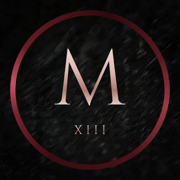
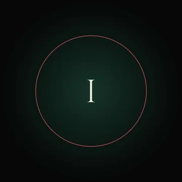
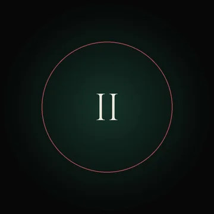
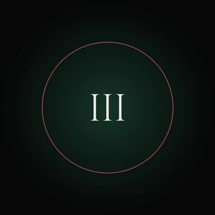
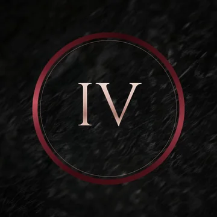
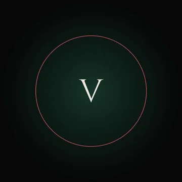

Так профиль будет выглядеть после 12 публикаций. Нажмите на любой пост: откроются все слайды, подпись и хэштеги, которые можно скопировать.


Продукт
Укладка
Аромат
Партнёрам
ЗаказПубликовать по порядку от 1 до 12, тогда сетка сложится как здесь.
Styling paste · strong hold · matte finish Создана барбером 13 by Timati: 3 года, 38 попыток Старт продаж: декабрь 2026 Заявка на сайте ↓